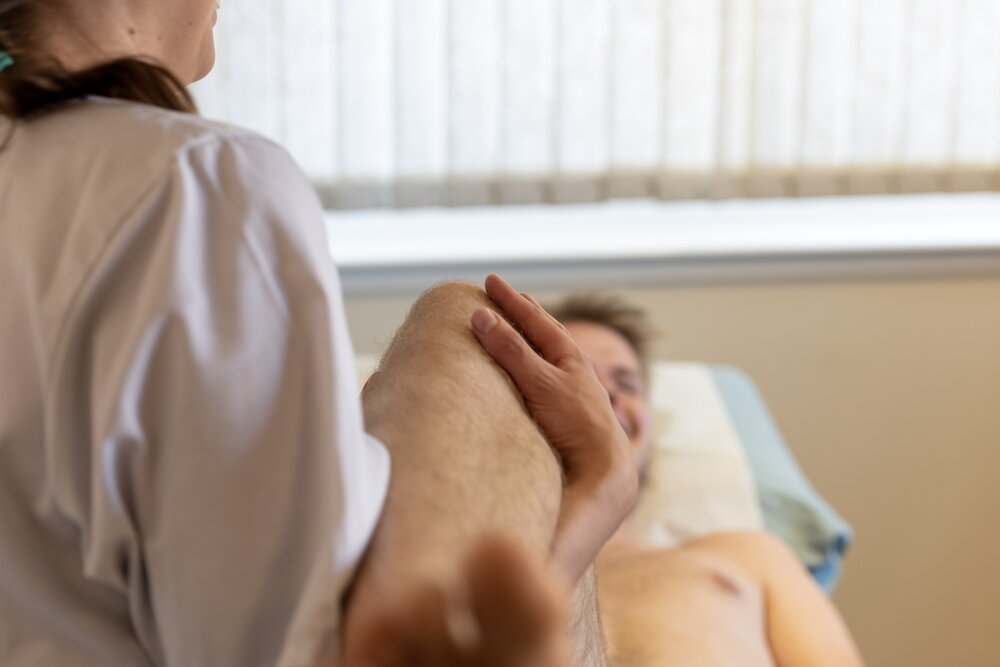

Framework Livingston is a friendly osteopathy clinic, based in West-Lothian that treats a wide range of musculoskeletal complaints, from neck pain to ankle pain and everything in between. The clinic was first established in 2000, and is highly regarded in the local area.
Everyone can benefit from osteopathy, from children to seniors, athletes and desk workers. Osteopathy uses the core principal that the well-being of an individual relies on the way that bones, muscles, ligaments and connective tissue work with each other. Osteopathy uses a non-invasive, holistic approach to identify problematic areas in a persons body and uses a combination hands on techniques to restore function and improve the overall health.
Framework Livingston is under new ownership, but we still work very closely with Framework Clinics. Don’t worry, Andrew is still available at his usual times on Mondays and Wednesdays.
{% endblock %}
1 / 3
2 / 3

3 / 3
